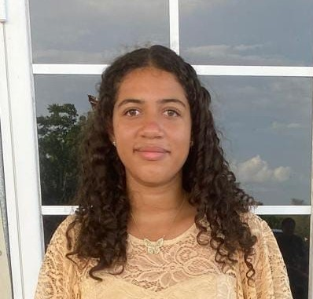

Ismael Teul
Program: Information Technology
Interest: Ismael enjoys web development and sees it as a vital tool in project management...
Takeaway: "Gaining a high-level understanding of how computers work helped reinforce the theoretical foundation behind modern computing systems."
Kiyanee Gamez
Program: Information Technology
Interest: My interest in information technology is programming.
Takeaway: "My favorite topic from this course is Operating Systems."

Robyn Vasquez
Program: Information Technology
Interest: This is my first year in the Information Technology program at the University of Belize...
Takeaway: "In my opinion, the most interesting topic we have covered in the Fundamentals of Computing class is Algorithms."